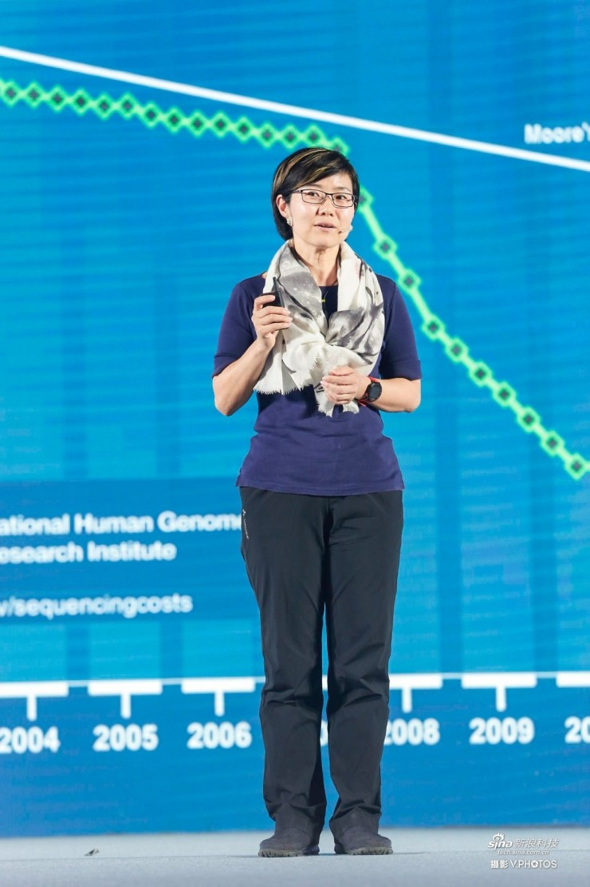
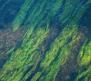
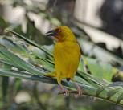

什么是生命时代？ 怎么讲生命时代？所有的生命，不管是人、动植物、微生物都是ATCG，这个世界就是这么简单，就是这么奇妙。而在上世纪最重要的一件事情就是把ATCG变成了0101。这把尺子是在4年前诺贝尔博物馆发现的，这是一个发明的尺子，一共有两米长，正反两面打开是这样子的。 每一个刻度上都是一个重大的历史事件，要么就是社会的，要么就是科学技术的。
育种热点追踪

华大基因：生命时代开启，基因工程发展超“摩尔定律”
2016.06.22 22:20

